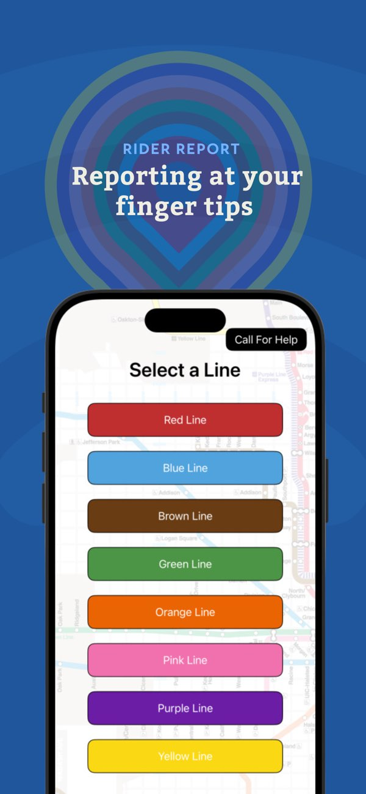
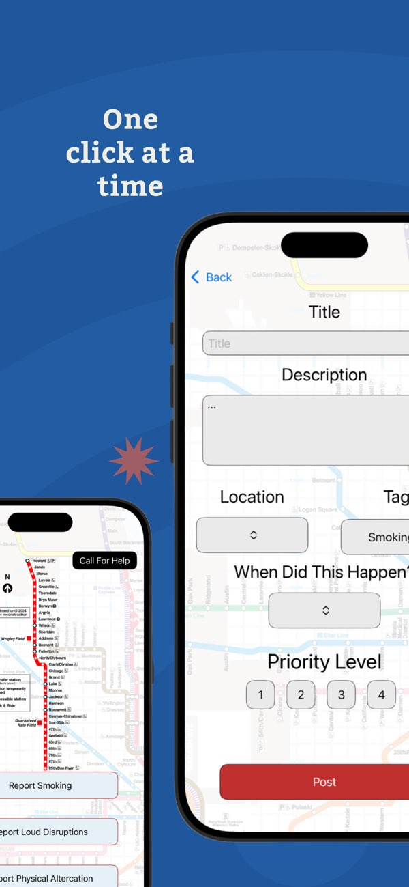
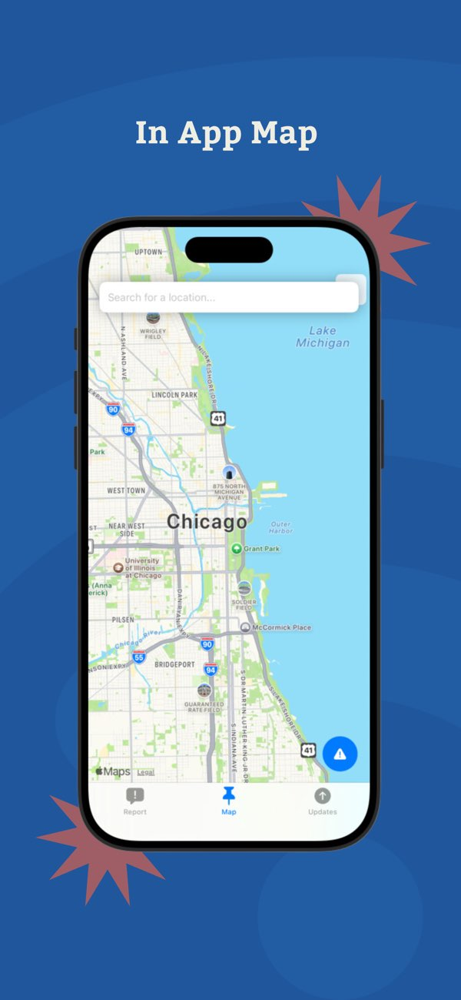
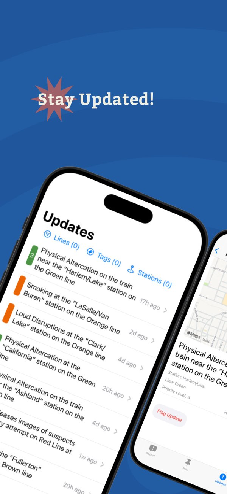
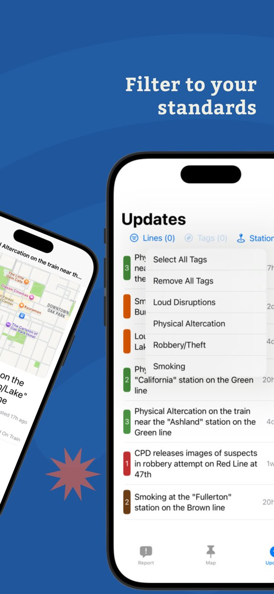
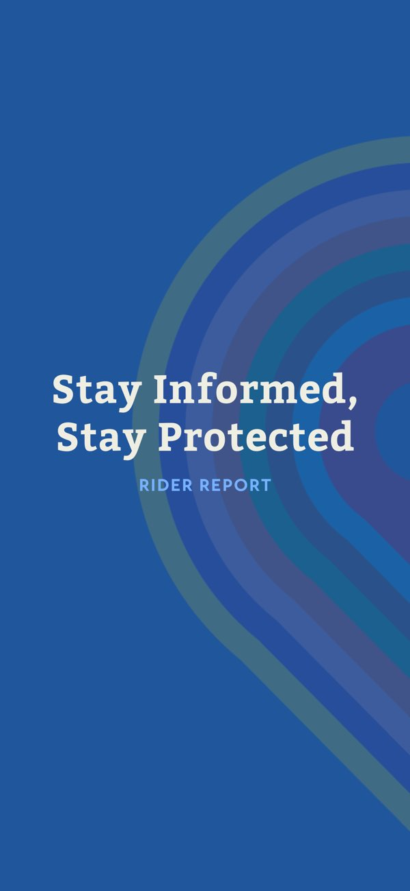
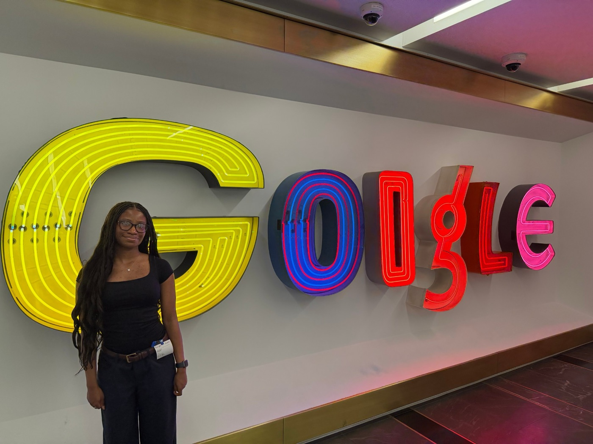
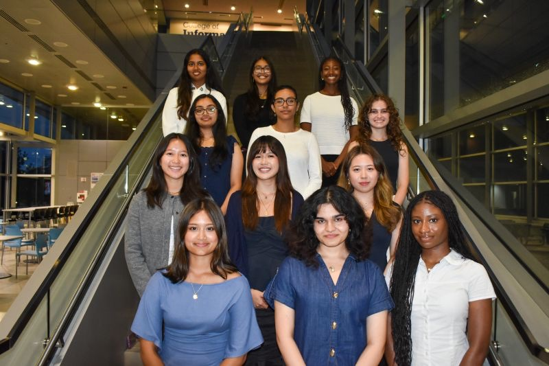
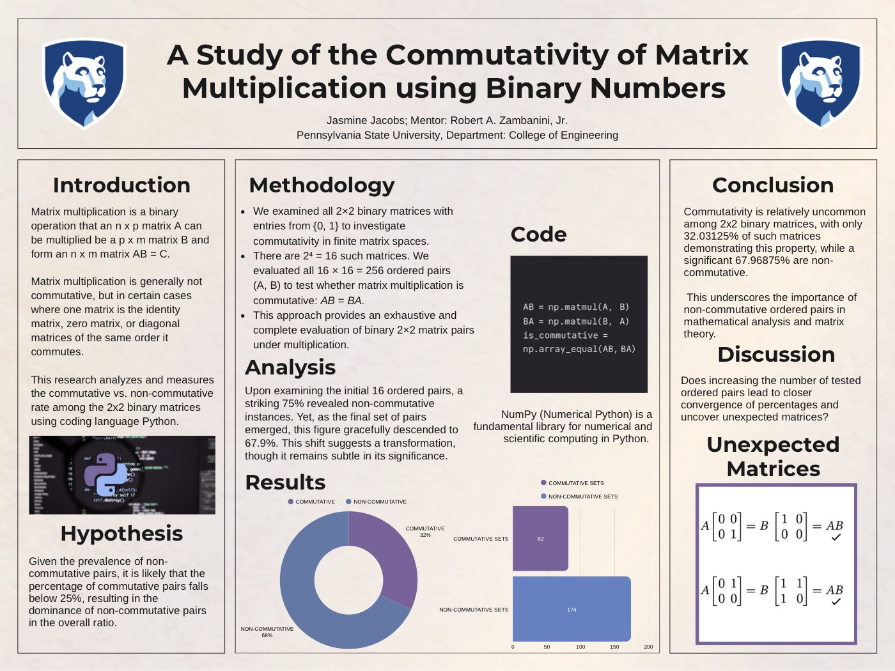
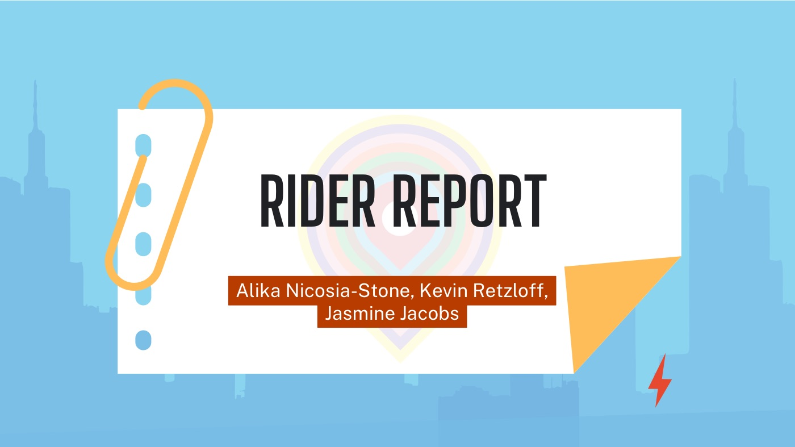

hello, i'm jasmine
- major
- B.S. Computer Science
- minor
- Mathematics
- year
- senior · class of May 2027
- town
- Chicago, IL → State College, PA
tech stack
- Python
- Swift / SwiftUI
- Java
- C / C++
- SQL
- Firebase
- Supabase
- Docker
- pandas
- Git
press ▶ in the player · afro jazz (slowed)
▍
computer science @ penn state · ios · data pipelines · ai · hardware
click the flower to re-bloom · scroll ↓
a little desk of things about me. hover to tilt, click to poke.
tech stack
interests.json
Claude · Gemini · OpenAI. prompt-engineering autonomous coding agents (Devin), embedding-based matching, and turning the chat on this page into a real AI version of me.
a tiny computer i can actually wire things to. computer organization, assembly, and how the bits really move. leaning toward computer engineering.
where my math minor meets CS: how computers approximate roots, integrals and linear systems, and how tiny floating-point errors snowball.
real-time market data, news and analytics packed into one very dense screen. a masterclass in data pipelines and power-user UI.
click the laptop → git log --me
personalized snippet · new one every refresh
name.bin
College of Engineering · University Park, PA
B.S. CS, minor in Math · May 2027
clubs[]
every little glow-buddy guards a level. click one (or a tab below) to open it.
drag to peek · click a buddy
BNY · Pittsburgh, PA
Everyone Can Code Chicago · Chicago, IL
SDI Presence · Chicago, IL
a CTA train app · SwiftUI · Firestore
Built for riders, by riders. Chicago commuters share live updates and safety concerns about CTA trains and buses, see what's happening on their line, and reach 911 in one tap.






swipe the screen · drag the frame to rotate
Penn State College of Engineering · Mentor: Robert A. Zambanini, Jr.
Matrix multiplication usually isn't commutative. So how often does AB = BA hold if you check every 2×2 matrix with entries in {0, 1}? That's 2⁴ = 16 matrices and 16 × 16 = 256 ordered pairs. I tested all of them in Python with NumPy.
AB = np.matmul(A, B)
BA = np.matmul(B, A)
is_commutative = np.array_equal(AB, BA)Result: only 32.03% of pairs commute (82 of 256). The hypothesis guessed below 25%. And over the first 16 pairs, 75% didn't commute; that settled to 67.97% across the full set.
view the poster ↗try it: pick A and B
commutative: 0 · non-commutative: 0
coursework
$ ls ./memories --tag=




$ ping jasmine 64 bytes from jasmine: open to SWE / data / AI roles 64 bytes from jasmine: response time ≈ fast
that's.... me, jasmine!
built with three.js, css 3d and a lot of boba · © Jasmine Jacobs